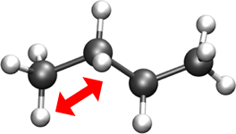
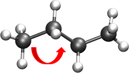
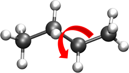
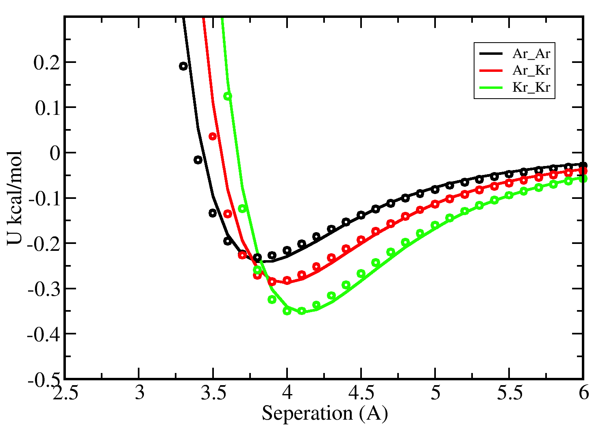

Input File Formats¶
In order to run simulation in GOMC, the following files need to be provided:
- GOMC executable
- PDB file(s)
- PSF file(s)
- Parameter file
- Input file “NAME.conf” (proprietary control file)
PDB File¶
GOMC requires only one PDB file for NVT and NPT ensembles. However, GOMC requires two PDB files for GEMC and GCMC ensembles.
What is PDB file¶
The term PDB can refer to the Protein Data Bank (http://www.rcsb.org/pdb/), to a data file provided there, or to any file following the PDB format. Files in the PDB include various information such as the name of the compound, the ATOM and HETATM records containing the coordinates of the molecules, and etc. PDB widely used by NAMD, GROMACS, CHARMM, ACEMD, and Amber. GOMC ignore everything in a PDB file except for the REMARK, CRYST1, ATOM, and END records. An overview of the PDB standard can be found here:
http://www.wwpdb.org/documentation/file-format-content/format33/sect2.html#HEADER http://www.wwpdb.org/documentation/file-format-content/format33/sect8.html#CRYST1 http://www.wwpdb.org/documentation/file-format-content/format33/sect9.html#ATOM
PDB contains foure major parts; REMARK, CRYST1, ATOM, and END. Here is the definition of each field and how GOMC is using them to get the information it requires.
REMARK: This header records present experimental details, annotations, comments, and information not included in other records (http://www.wwpdb.org/documentation/file-format-content/format33/ sect2.html#HEADER). However, GOMC uses this header to print simulation informations.- Max Displacement (Å)
- Max Rotation (Degree)
- Max volume exchange (\(Å^3\))
- Monte Carlo Steps (MC)
CRYST1: This header records the unit cell dimension parameters (http://www.wwpdb.org/documentation/file-format-content/format33/sect8.html#CRYST1).- Lattice constant: a,b,c (Å)
- Lattice angles: \(\alpha, \beta, \gamma\) (Degree)
ATOM: The ATOM records present the atomic coordinates for standard amino acids and nucleotides. They also present the occupancy and temperature factor for each atom (http://www.wwpdb.org/documentation/file-format-content/format33/sect9.html#ATOM).- ATOM: Record name
- serial: Atom serial number.
- name: Atom name.
- resName: Residue name.
- chainID: Chain identifier.
- resSeq: Residue sequence number.
- x: Coordinates for X (Å).
- y: Coordinates for Y (Å).
- z: Coordinates for Z (Å).
- occupancy: GOMC uses to define which atoms belong to which box.
- beta: Beta or Temperature factor. GOMC uses this value to define the mobility of the atoms. element: Element symbol.
END: A frame in the PDB file is terminated with the keyword.
Here are the PDB output of GOMC for the first molecule of isobutane:
REMARK GOMC 122.790 3.14159 3439.817 1000000
CRYST1 35.245 35.245 35.245 90.00 90.00 90.00
ATOM 1 C1 ISB 1 0.911 -0.313 0.000 0.00 0.00 C
ATOM 2 C1 ISB 1 1.424 -1.765 0.000 0.00 0.00 C
ATOM 3 C1 ISB 1 -0.629 -0.313 0.000 0.00 0.00 C
ATOM 4 C1 ISB 1 1.424 0.413 -1.257 0.00 0.00 C
END
The fields seen here in order from left to right are the record type, atom ID, atom name, residue name, residue ID, x, y, and z coordinates, occupancy, temperature factor (called beta), and segment name.
The atom name is “C1” and residue name is “ISB”. The PSF file (next section) contains a lookup table of atoms. These contain the atom name from the PDB and the name of the atom kind in the parameter file it corresponds to. As multiple different atom names will all correspond to the same parameter, these can be viewed “atom aliases” of sorts. The chain letter (in this case ‘A’) is sometimes used when packing a number of PDBs into a single PDB file.
Important
- VMD requires a constant number of ATOMs in a multi-frame PDB (multiple records terminated by “END” in a single file). To compensate for this, all atoms from all boxes in the system are written to the output PDBs of this code.
- For atoms not currently in a box, the coordinates are set to
< 0.00, 0.00, 0.00 >. The occupancy is commonly just set to “1.00” and is left unused by many codes. We recycle this legacy parameter by using it to denote, in our output PDBs, the box a molecule is in (box 0 occupancy=0.00 ; box 1 occupancy=1.00) - The beta value in GOMC code is used to define the mobility of the molecule.
- Beta = 0.00: molecule can move and transfer within and between boxes.
- Beta = 1.00: molecule is fixed in its position.
- Beta = 2.00: molecule can move within the box but cannot be transferred between boxes.
Generating PDB file¶
With that overview of the format in mind, the following steps describe how a PDB file is typically built.
- A single molecule PDB is obtained. In this example, the QM software package Gaussian was used to draw the molecule, which was then edited by hand to adhere to the PDB spec properly. The end result is a PDB for a single molecule:
REMARK 1 File created by GaussView 5.0.8 ATOM 1 C1 ISB 1 0.911 -0.313 0.000 C ATOM 2 C1 ISB 1 1.424 -1.765 0.000 C ATOM 3 C1 ISB 1 -0.629 -0.313 0.000 C ATOM 4 C1 ISB 1 1.424 0.413 -1.257 C END
- Next, packings are calculated to place the simulation in a region of vapor-liquid coexistence. There are a couple of ways to do this in Gibbs ensemble:
- Pack both boxes to a single middle density, which is an average of the liquid and vapor densities.
- Same as previous method, but add a modest amount to axis of one box (e.g. 10-30 A). This technique can be handy in the constant pressure Gibbs ensemble.
- Pack one box to the predicted liquid density and the other to the vapor density.
A good reference for getting the information needed to estimate packing is the NIST Web Book database of pure compounds:
- After packing is determined, a basic pack can be performed with a Packmol script. Here is one example:
tolerance 3.0 filetype pdb output STEP2 ISB packed BOX 0.pdb structure isobutane.pdb number 1000 inside cube 0.1 0.1 0.1 70.20 end structureCopy the above text into “pack_isobutane.inp” file, save it and run the script by typing the following line into the terminal:
$ ./packmol < pack_isobutane.inp
PSF File¶
GOMC requires only one PSF file for NVT and NPT ensembles. However, GOMC requires two PSF files for GEMC and GCMC ensembles.
What is PSF file¶
Protein structure file (PSF), contains all of the molecule-specific information needed to apply a particular force field to a molecular system. The CHARMM force field is divided into a topology file, which is needed to generate the PSF file, and a parameter file, which supplies specific numerical values for the generic CHARMM potential function. The topology file defines the atom types used in the force field; the atom names, types, bonds, and partial charges of each residue type; and any patches necessary to link or otherwise mutate these basic residues. The parameter file provides a mapping between bonded and nonbonded interactions involving the various combinations of atom types found in the topology file and specific spring constants and similar parameters for all of the bond, angle, dihedral, improper, and van der Waals terms in the CHARMM potential function. PSF file widely used by by NAMD, CHARMM, and X-PLOR.
The PSF file contains six main sections: remarks, atoms, bonds, angles, dihedrals, and impropers (dihedral force terms used to maintain planarity). Each section starts with a specific header described bellow:
NTITLE: remarks on the file. The following is taken from a PSF file for isobutane:PSF 3 !NTITLE REMARKS original generated structure x-plor psf file REMARKS topology ./Top Branched Alkanes.inp REMARKS segment ISB { first NONE; last NONE; auto angles dihedrals }NATOM: Defines the atom names, types, and partial charges of each residue type.atom ID segment name residue ID residue name atom name atom type atom charge atom mass
The following is taken from a PSF file for isobutane:
4000 !NATOM 1 ISB 1 ISB C1 CH1 0.000000 13.0190 0 2 ISB 1 ISB C2 CH3 0.000000 15.0350 0 3 ISB 1 ISB C3 CH3 0.000000 15.0350 0 4 ISB 1 ISB C4 CH3 0.000000 15.0350 0 5 ISB 2 ISB C1 CH1 0.000000 13.0190 0 6 ISB 2 ISB C2 CH3 0.000000 15.0350 0 7 ISB 2 ISB C3 CH3 0.000000 15.0350 0 8 ISB 2 ISB C4 CH3 0.000000 15.0350 0
The fields in the atom section, from left to right are atom ID, segment name, residue ID, residue name, atom name, atom type, charge, mass, and an unused 0.
NBOND: The covalent bond section lists four pairs of atoms per line. The following is taken from a PSF file for isobutane:3000 !BOND: bonds 1 2 1 3 1 4 5 6 5 7 5 8
NTHETA: The angle section lists three triples of atoms per line. The following is taken from a PSF file for isobutane:3000 !NTHETA: angles 2 1 4 2 1 3 3 1 4 6 5 8 6 5 7 7 5 8
NPHI: The dihedral sections list two quadruples of atoms per line.NIMPHI: The improper sections list two quadruples of atoms per line. GOMC currently does not support improper. For the molecules without dihedral or improper, PDF file look like the following:0 !NPHI: dihedrals 0 !NIMPHI: impropers
(other sections such as cross terms)
Important
- The PSF file format is a highly redundant file format. It repeats identical topology of thousands of molecules of a common kind in some cases. GOMC follows the same approach as NAMD, allowing this excess information externally and compiling it in the code.
- Other sections (e.g. cross terms) contain unsupported or legacy parameters and are ignored.
- Following the restrictions of VMD, the order of the PSF atoms must match the order in the.
- Improper entries are read and stored, but are not currently used. Support will eventually be added for this.
Generating PSF file¶
The PSF file is typically generated using PSFGen. It is convenient to make a script, such as the example below, to do this:
Typically, one script is run per box to generate a finalized PDB/PSF for that box. The script requires one additional file, the NAMD-style topology file. While GOMC does not directly read or interact with this file, it’s typically used to generate the PSF and, hence, is considered one of the integral file types. It will be briefly discussed in the following section.
Topology File¶
A CHARMM forcefield topology file contains all of the information needed to convert a list of residue names into a complete PSF structure file. The topology is a whitespace separated file format, which contains a list of atoms and their corresponding masses, and a list of residue information (charges, composition, and topology). Essentially, it is a non-redundant lookup table equivalent to the PSF file.
This is followed by a series of residues, which tell PSFGen what atoms are bonded to a given atom. Each residue is comprised of four key elements:
- A header beginning with the keyword RESI with the residue name and net charge
- A body with multiple ATOM entries (not to be confused with the PDB-style entries of the same name), which list the partial charge on the particle and what kind of atom each named atom in a specific molecule/residue is.
- A section of lines starting with the word BOND contains pairs of bonded atoms (typically 3 per line)
- A closing section with instructions for PSFGen.
Here’s an example of topology file for isobutane:
* Custom top file -- branched alkanes *
11
!
MASS 1 CH3 15.035 C !
MASS 2 CH1 13.019 C !
AUTOGENERATE ANGLES DIHEDRALS
RESI ISB 0.00 ! isobutane - TraPPE
GROUP
ATOM C1 CH1 0.00 ! C3
ATOM C2 CH3 0.00 ! C2-C1
ATOM C3 CH3 0.00 ! C4
ATOM C4 CH3 0.00 !
BOND C1 C2 C1 C3 C1 C4
PATCHING FIRS NONE LAST NONE
END
Note
The keyword END must be used to terminate this file and keywords related to the auto-generation process must be placed near the top of the file, after the MASS definitions.
Tip
More in-depth information can be found in the following links:
Parameter File(s)¶
Currently, GOMC uses a single parameter file and the user has the two kinds of parameter file choices:
CHARMM(Chemistry at Harvard Molecular Mechanics) compatible parameter fileEXOTICparameter file
If the parameter file type is not specified or if the chosen file is missing, an error will result.
Both force field file options are whitespace separated files with sections preceded by a tag. When a known tag (representing a molecular interaction in the model) is encountered, reading of that section of the force field begins. Comments (anything after a * or !) and whitespace are ignored. Reading concludes when the end of the file is reached or another section tag is encountered.
CHARMM format parameter file¶
CHARMM contains a widely used model for describing energies in Monte Carlo and molecular dynamics simulations. It is intended to be compatible with other codes that use such a format, such as NAMD. See here for a general overview of the CHARMM force field.
Here’s the basic CHARMM contributions that are supported in GOMC:
As seen above, the following are recognized, read and used:
BONDS- Quadratic expression describing bond stretching based on bond length (b) in Angstrom – Typically, it is ignored as bonds are rigid for Monte Carlo simulations. To specify that it is to be ignored, put a very large value i.e. “999999999999” for \(K_b\).Note
GOMC does not sample bond stretch.
Oscillations about the equilibrium bond length
ANGLES- Describe the conformational lbehavior of an angle (\(\delta\)) between three atoms, one of which is shared branch point to the other two. To fix any angle and ignore the related angle energy, put a very large value i.e. “999999999999” for \(K_\delta\).Oscillations of 3 atoms about an equilibrium bond angle
DIHEDRALS- Describes crankshaft-like rotation behavior about a central bond in a series of three consecutive bonds (rotation is given as \(\phi\)).Torsional rotation of 4 atoms about a central bond
NONBONDED- This tag name only should be used if CHARMM force files are being used. This section describes 12-6 (Lennard-Jones) non-bonded interactions. Non-bonded parameters are assigned by specifying atom type name followed by polarizabilities (which will be ignored), minimum energy, and (minimum radius)/2. In order to modify 1-4 interaction, a second polarizability (again, will be ignored), minimum energy, and (minimum radius)/2 need to be defined; otherwise, the same parameter will be considered for 1-4 interaction.Non-bonded energy terms (electrostatics and Lennard-Jones)
NBFIX- This tag name only should be used if CHARMM force field is being used. This section allows in- teraction between two pairs of atoms to be modified, done by specifying two atom type names followed by minimum energy and minimum radius. In order to modify 1-4 interaction, a second minimum energy and minimum radius need to be defined; otherwise, the same parameter will be considered for 1-4 interaction.Note
Please pay attention that in this section we define minimum radius, not (minimum ra- dius)/2 as it is defined in the NONBONDED section.
Currently, supported sections of the
CHARMMcompliant file includeBONDS,ANGLES,DIHEDRALS,NONBONDED,NBFIX. Other sections such asCMAPare not currently read or supported.
BONDS¶
(“bond stretching”) is one key section of the CHARMM-compliant file. Units for the \(K_b\) variable in this section are in kcal/mol; the \(b_0\) section (which represents the equilibrium bond length for that kind of pair) is measured in Angstroms.
BONDS
!V(bond) = Kb(b - b0)**2
!
!Kb: kcal/mole/A**2
!b0: A
!
! Kb (kcal/mol) = Kb (K) * Boltz. const.;
!
!atom type Kb b0 description
CH3 CH1 9999999999 1.540 ! TraPPE 2
Note
The \(K_b\) value may appear odd, but this is because a larger value corresponds to a more rigid bond. As Monte Carlo force fields (e.g. TraPPE) typically treat molecules as rigid constructs, \(K_b\) is set to a large value - 9999999999. Sampling bond stretch is not supported in GOMC.
ANGLES¶
(“bond bending”), where \(\theta\) and \(\theta_0\) are commonly measured in degrees and \(K_\theta\) is measured in kcal/mol/K. These values, in literature, are often expressed in Kelvin (K). To convert Kelvin to kcal/mol/K, multiply by the Boltzmann constant – \(K_\theta\), 0.0019872041 kcal/mol. In order to fix the angle, it requires to set a large value for \(K_\theta\). By assigning a large value like 9999999999, specified angle will be fixed and energy of that angle will considered to be zero.
Here is an example of what is necessary for isobutane:
ANGLES
!
!V(angle) = Ktheta(Theta - Theta0)**2
!
!V(Urey-Bradley) = Kub(S - S0)**2
!
!Ktheta: kcal/mole/rad**2
!Theta0: degrees
!S0: A
!
! Ktheta (kcal/mol) = Ktheta (K) * Boltz. const.
!
!atom types Ktheta Theta0 Kub(?) S0(?)
CH3 CH1 CH3 62.100125 112.00 ! TraPPE 2
Some CHARMM ANGLES section entries include Urey-Bradley potentials (\(K_{ub}\), \(b_{ub}\)), in addition to the standard quadratic angle potential. The constants related to this potential function are currently read, but the logic has not been added to calculate this potential function. Support for this potential function will be added in later versions of the code.
DIHEDRALS¶
The final major bonded interactions section of the CHARMM compliant parameter file are the DIHEDRALS. Each dihedral is composed of a dihedral series of 1 or more terms. Often, there are 4 to 6 terms in a dihedral. Angles for the dihedrals’ deltas are given in degrees.
Since isobutane has no dihedral, here are the parameters pertaining to 2,3-dimethylbutane:
DIHEDRALS
!
!V(dihedral) = Kchi(1 + cos(n(chi) - delta))
!
!Kchi: kcal/mole
!n: multiplicity
!delta: degrees
!
! Kchi (kcal/mol) = Kchi (K) * Boltz. const.
!
!atom types Kchi n delta description
X CH1 CH1 X -0.498907 0 0.0 ! TraPPE 2
X CH1 CH1 X 0.851974 1 0.0 ! TraPPE 2
X CH1 CH1 X -0.222269 2 180.0 ! TraPPE 2
X CH1 CH1 X 0.876894 3 0.0 ! TraPPE 2
Note
The code allows the use of ‘X’ to indicate ambiguous positions on the ends. This is useful because this kind is often determined solely by the two middle atoms in the middle of the dihedral, according to literature.
IMPROPERS¶
Energy parameters used to describe out-of-plane rocking are currently read, but unused. The section is often blank. If it becomes necessary, algorithms to calculate the improper energy will need to be added.
NONBONDED¶
The next section of the CHARMM style parameter file is the NONBONDED. In order to use TraPPE this section of the CHARMM compliant file is critical. Here’s an example with our isobutane potential model:
NONBONDED
!
!V(Lennard-Jones) = Eps,i,j[(Rmin,i,j/ri,j)**12 - 2(Rmin,i,j/ri,j)**6]
!
!atom ignored epsilon Rmin/2 ignored eps,1-4 Rmin/2,1-4
!
CH3 0.0 -0.194745992 2.10461634058 0.0 0.0 0.0 ! TraPPE 1
CH1 0.0 -0.019872040 2.62656119304 0.0 0.0 0.0 ! TraPPE 2
End
Note
The \(R_{min}\) is different from \(\sigma\). \(\sigma\) is the distance to the x-intercept (where interaction energy goes from being repulsive to positive). \(R_{min}\) is the potential well-depth, where the attraction is maximum. To convert \(\sigma\) to \(R_{min}\), simply multiply \(\sigma\) by 0.56123102415, and flag it with a negative sign.
NBFIX¶
The last section of the CHARMM style parameter file is the NBFIX. In this section, individual pair interaction will be modified. First, pseudo non-bonded parameters have to be defined in NONBONDED and modified in NBFIX. Here?s an example if it is required to modify interaction between CH3 and CH1 atoms:
NBFIX
!V(Lennard-Jones) = Eps,i,j[(Rmin,i,j/ri,j)**12 - 2(Rmin,i,j/ri,j)**6]
!
!atom atom epsilon Rmin eps,1-4 Rmin,1-4
CH3 CH1 -0.294745992 1.10461634058 !
End
Exotic Parameter File¶
The exotic file is intended for use with nonstandard/specialty models of molecular interaction, which are not included in CHARMM standard. Currently, two custom interaction are included:
NONBODED_MIEThis section describes n-6 (Lennard-Jones) non-bonded interactions. The Lennard- Jones potential (12-6) is a subset of this potential. Non-bonded parameters are assigned by specifying atom type name followed by minimum energy, atom diameter, and repulsion exponent. In order to modify 1-4 interaction, a second minimum energy, atom diameter, and repulsion exponent need to be defined; otherwise, the same parameters would be considered for 1-4 interaction.NBFIX_MIEThis section allows n-6 (Lennard-Jones) interaction between two pairs of atoms to be mod- ified. This is done by specifying two atoms type names followed by minimum energy, atom diameter, and repulsion exponent. In order to modify 1-4 interaction, a second minimum energy, atom diameter, and repulsion exponent need to be defined; otherwise, the same parameter will be considered for 1-4 interaction.
Note
In EXOTIC force field, the definition of atom diameter(\(\sigma\)) is same for both NONBONDED_MIE and NBFIX_MIE.
Otherwise, the exotic file reuses the same geometry section headings - BONDS / ANGLES / DIHEDRALS / etc. The only difference in these sections versus in the CHARMM format force field file is that the energies are in Kelvin (‘K’), the unit most commonly found for parameters in Monte Carlo chemical simulation literature. This precludes the need to convert to kcal/mol, the energy unit used in CHARMM. The most frequently used section of the exotic files in the Mie potential section is NONBONDED_MIE. Here are the parameters that are used to simulate alkanes:
NONBONDED_MIE
!
!V(mie) = 4*eps*((sig ij/r ij)^n-(sig ij/r ij)^6)
!
!atom eps sig n eps,1-4 sig,1-4 n,1-4
CH4 161.00 3.740 14 0.0 0.0 0.0 ! Potoff, et al. ’09
CH3 121.25 3.783 16 0.0 0.0 0.0 ! Potoff, et al. ’09
CH2 61.00 3.990 16 0.0 0.0 0.0 ! Potoff, et al. ’09
Note
Although the units (Angstroms) are the same, the exotic file uses \(\sigma\), not the \(R_{min}\) used by CHARMM. The energy in the exotic file are expressed in Kelvin (K), as this is the standard convention in the literature.
Control File (*.conf)¶
The control file is GOMC’s proprietary input file. It contains key settings. The settings generally fall under three categories:
- Input/Simulation Setup
- System Settings for During Run
- Output Settings
Note
The control file is designed to recognize logic values, such as “yes/true/on” or “no/false/off”.
Input/Simulation Setup¶
In this section, input file names are listed. In addition, if you want to restart your simulation or use integer seed for running your simulation, you need to modify this section according to your purpose.
RestartDetermines whether to restart the simulation from previous simulation or not.
- Value 1: Boolean - True if restart, false otherwise.
PRNGDictates how to start the pseudo-random number generator (PRNG)
Value 1: String
- RANDOM: Randomizes Mersenne Twister PRNG with random bits based on the system time.
################################# # kind {RANDOM, INTSEED} ################################# PRNG RANDOM- INTSEED: This option “seeds” the Mersenne Twister PRNG with a standard integer. When the same integer is used, the generated PRNG stream should be the same every time, which is helpful in tracking down bugs.
Random_SeedDefines the seed number. If “INTSEED” is chosen, seed number needs to be specified; otherwise, the program will terminate.
- Value 1: ULONG - If “INTSEED” option is selected for PRNG (See above example)
################################# # kind {RANDOM, INTSEED} ################################# PRNG INTSEED Random Seed 50ParaTypeCHARMMSets force field type to CHARMM style.
- Value 1: Boolean - True if it is CHARMM forcefield, false otherwise.
################################# # FORCE FIELD TYPE ################################# ParaTypeCHARMM true
ParaTypeEXOTICSets force field type to EXOTIC style.
- Value 1: Boolean - True if it is EXOTIC forcefield, false otherwise.
################################# # FORCE FIELD TYPE ################################# ParaTypeEXOTIC true
ParaTypeMARTINISets force field type to MARTINI style.
- Value 1: Boolean - True if it is MARTINI forcefield, false otherwise.
################################# # FORCE FIELD TYPE ################################# ParaTypeMARTINI true
ParametersProvides the name and location of the parameter file to use for the simulation.
- Value 1: String - Sets the name of the parameter file.
################################# # FORCE FIELD TYPE ################################# ParaTypeCHARMM yes Parameters ../../common/Par_TraPPE_Alkanes.inp
CoordinatesDefines the PDB file names (coordinates) and location for each box in the system.
- Value 1: Integer - Sets box number (starts from ‘0’).
- Value 2: String - Sets the name of PDB file.
Note
NVT and NPT ensembles requires only one PDB file and GEMC/GCMC requires two PDB files. If the number of PDB files is not compatible with the simulation type, the program will terminate.
Example of NVT or NPT ensemble:
################################# # INPUT PDB FILES - NVT or NPT ensemble ################################# Coordinates 0 STEP3_START_ISB_sys.pdb
Example of Gibbs or GC ensemble:
################################# # INPUT PDB FILES - Gibbs or GC ensemble ################################# Coordinates 0 STEP3_START_ISB_sys_BOX_0.pdb Coordinates 1 STEP3_START_ISB_sys_BOX_1.pdb
Note
In case of Restart true, the restart PDB output file from GOMC (OutputName_BOX_0_restart.pdb) can be used for each box.
Example of Gibbs ensemble when Restart mode is active:
################################# # INPUT PDB FILES ################################# Coordinates 0 ISB_T_270_k_BOX_0_restart.pdb Coordinates 1 ISB_T_270_k_BOX_1_restart.pdb
StructuresDefines the PSF filenames (structures) for each box in the system.
- Value 1: Integer - Sets box number (start from ‘0’)
- Value 2: String - Sets the name of PSF file.
Note
NVT and NPT ensembles requires only one PSF file and GEMC/GCMC requires two PSF files. If the number of PSF files is not compatible with the simulation type, the program will terminate.
Example of NVT or NPT ensemble:
################################# # INPUT PSF FILES ################################# Structure 0 STEP3_START_ISB_sys.psf
Example of Gibbs or GC ensemble:
################################# # INPUT PSF FILES ################################# Structure 0 STEP3_START_ISB_sys_BOX_0.psf Structure 1 STEP3_START_ISB_sys_BOX_1.psf
Note
In case of Restart true, the PSF output file from GOMC (OutputName merged.psf) can be used for both boxes.
Example of Gibbs ensemble when Restart mode is active:
################################# # INPUT PSF FILES ################################# Structure 0 ISB_T_270_k_merged.psf Structure 1 ISB_T_270_k_merged.psf
System Settings for During Run Setup¶
This section contains all the variables not involved in the output of data during the simulation, or in the reading of input files at the start of the simulation. In other words, it contains settings related to the moves, the thermodynamic constants (based on choice of ensemble), and the length of the simulation. Note that some tags, or entries for tags, are only used in certain ensembles (e.g. Gibbs ensemble). These cases are denoted with colored text.